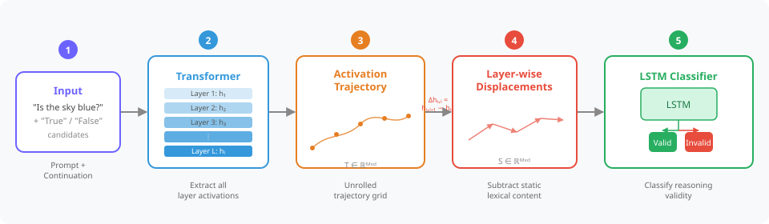

Existing explainability methods for Large Language Models (LLMs) typically treat hidden states as static points in activation space, assuming that correct and incorrect inferences can be separated using representations from an individual layer. However, these activations are saturated with polysemantic features, leading to linear probes learning surface-level lexical patterns rather than underlying reasoning structures.
We introduce Truth as a Trajectory (TaT), which models the transformer inference as an unfolded trajectory of iterative refinements, shifting analysis from static activations to layer-wise geometric displacement. By analyzing displacement of representations across layers, TaT uncovers geometric invariants that distinguish valid reasoning from spurious behavior.
We evaluate TaT across dense and Mixture-of-Experts (MoE) architectures on benchmarks spanning commonsense reasoning, question answering, and toxicity detection. Without access to the activations themselves and using only changes in activations across layers, we show that TaT effectively mitigates reliance on static lexical confounds, outperforming conventional probing, and establishes trajectory analysis as a complementary perspective on LLM explainability.
📈
We introduce TaT, which models LLM inference as a dynamical process unfolding across layers and tokens, capturing the continuous geometric evolution of reasoning rather than focusing on individual layers.
📑
By analyzing layer-wise displacement vectors rather than activations themselves, we mitigate reliance on static lexical features and expose trajectory-level structure unobservable to linear probes.
🔥
We demonstrate that trajectory analysis extends to complex behavioral properties such as toxicity. TaT significantly outperforms linear probes in distinguishing meaningful context from toxic intent, validating its utility for reliable model monitoring.
Standard probing methods select a single layer and fit a linear classifier to the raw activations. This approach conflates what a model encodes at a given depth (token identity, lexical content) with how representations are being updated. TaT addresses this by shifting the analysis object from static activation vectors to layer-wise displacement vectors.
For each token t at each layer transition ℓ, we compute the residual update dt,ℓ = ht,ℓ+1 − ht,ℓ. These displacement vectors isolate the model’s active refinement process, specifically when a feature is being written to rather than merely stored. The full displacement sequence across all tokens and layers is then processed by a lightweight LSTM classifier that learns the geometric signature of valid reasoning.

Figure 2. TaT pipeline. (1) Prompt + candidate continuation is passed through a frozen LLM. (2) All layer activations are extracted. (3) An unrolled trajectory grid T ∈ ℝM×d is formed. (4) Layer-wise displacements are computed to remove static lexical content. (5) An LSTM classifies the trajectory as valid or invalid reasoning.
Raw activations are dominated by high-magnitude, persistent components encoding token and prompt identity. By taking the inter-layer difference, we attenuate this static background and isolate the residual update fℓ(ht,ℓ). Because element-wise non-linearities in the transformer constrain updates to a consistent reference frame (Residual Alignment), displacements precisely signal when the model is actively writing to a feature, separating the mechanics of reasoning from the semantics of memory.
We explored scalar kinematic descriptors (velocity, acceleration, curvature, arc length) inspired by the transformer-as-dynamical-system literature. While velocity carries a predictive signal, no single descriptor generalizes consistently. An LSTM over the full displacement sequence captures the non-linear structural invariants that scalar measures miss, with negligible computational overhead (0.06% additional parameters and 0.12% additional memory relative to the base LLM forward pass).
We train a TaT classifier (and a linear probe baseline) on each of 9 reasoning benchmarks, then evaluate on all others without any fine-tuning. We report results for Llama-3.1-8B and Qwen2.5-14B. A strong OOD average indicates the method learns a transferable geometric signature of reasoning validity rather than task-specific lexical confounds.
| Train Set | Method | Evaluation Dataset | Avg | ID Acc. | OOD Avg. | ||||||||
|---|---|---|---|---|---|---|---|---|---|---|---|---|---|
| ARC-C | ARC-E | OpenQA | BoolQ | Hellaswag | CosQA | SiQA | ComQA | StoryCloze | |||||
| Zero-shot (Llama-3.1-8B) | 50.1 | 78.5 | 62.4 | 74.7 | 57.4 | 81.7 | 65.2 | 62.4 | 78.8 | 67.9 | N/A | N/A | |
| Few-shot (Llama-3.1-8B) | 65.3 | 84.3 | 67.0 | 83.8 | 76.8 | 82.0 | 67.7 | 71.1 | 83.1 | 75.7 | N/A | N/A | |
| ARC-C | Linear Probe | 75.32 | 80.09 | 78.60 | 55.48 | 70.35 | 73.34 | 65.47 | 74.59 | 66.01 | 71.03 | 75.32 | 70.49 |
| TaT (Ours) | 82.17 | 85.31 | 73.60 | 96.91 | 73.89 | 74.24 | 75.49 | 72.48 | 82.58 | 79.63 | 82.17 | 79.31 | |
| ARC-E | Linear Probe | 75.55 | 83.99 | 80.95 | 58.82 | 71.07 | 66.83 | 66.60 | 78.55 | 69.62 | 72.44 | 83.99 | 71.00 |
| TaT (Ours) | 73.81 | 89.10 | 77.20 | 78.56 | 79.19 | 75.08 | 60.85 | 71.09 | 94.98 | 77.76 | 89.10 | 76.34 | |
| OpenQA | Linear Probe | 66.42 | 69.44 | 83.15 | 56.79 | 70.26 | 61.53 | 65.47 | 73.01 | 57.94 | 67.11 | 83.15 | 65.11 |
| TaT (Ours) | 78.41 | 87.12 | 90.80 | 89.85 | 56.50 | 76.42 | 69.70 | 75.02 | 81.64 | 78.38 | 90.80 | 76.83 | |
| Hellaswag | Linear Probe | 52.92 | 58.60 | 58.35 | 58.24 | 88.64 | 71.17 | 60.39 | 63.34 | 77.61 | 65.47 | 88.64 | 62.58 |
| TaT (Ours) | 65.96 | 74.92 | 65.80 | 64.22 | 92.46 | 66.40 | 55.27 | 62.82 | 95.75 | 71.51 | 92.46 | 68.89 | |
Table 1 (excerpt, Llama-3.1-8B). TaT consistently achieves higher OOD averages than linear probes, demonstrating that displacement trajectories encode a transferable geometric signature of reasoning validity.
To confirm that TaT captures a genuine geometric invariant rather than simply a better task-specific model, we compare against LoRA (rank 16) fine-tuning, both trained on ARC-Easy and evaluated on transfer tasks. While LoRA achieves strong in-distribution accuracy (85.98%), its cross-task transfer is inconsistent. TaT outperforms LoRA on 5 out of 6 transfer tasks.
| Method | ARC-E (ID) |
StoryCloze | OpenQA | ARC-C | BoolQ | Hellaswag |
|---|---|---|---|---|---|---|
| Linear Probe | 83.99 | 69.62 | 80.95 | 75.55 | 58.82 | 71.07 |
| TaT (Ours) | 89.10 | 94.98 | 77.20 | 73.81 | 78.56 | 79.19 |
| LoRA (rank 16) | 85.98 | 83.76 | 52.40 | 61.26 | 79.97 | 75.86 |
Table 2. TaT outperforms LoRA on 5 of 6 transfer tasks when both are trained on ARC-Easy. LoRA modifies model weights and overfits to the source dataset's semantic distribution.
Toxicity detection challenges geometric analysis because labels are often defined by specific lexical triggers. Safe models must distinguish between toxic intent and the benign use of toxic vocabulary (e.g., quoting or educational contexts). We train on RealToxicityPrompts and evaluate OOD on ToxiGen, a dataset designed to be difficult for keyword-based classifiers.
Raw trajectory models (using activations directly) overfit to specific toxic vocabulary of the training set. TaT’s displacement-based approach captures the geometric character of toxic generation regardless of the specific words used, achieving the best OOD generalization across all tested architectures.
| Model | Method | OOD | RealToxicityPrompts (ID) | |
|---|---|---|---|---|
| ToxiGen | Standard | Challenging | ||
| Llama-3.1-8B | Linear Probe | 79.62 | 77.86 | 95.83 |
| Trajectory (Raw) | 81.99 | 82.16 | 97.91 | |
| TaT (Disp.) | 84.23 | 79.35 | 96.00 | |
| Qwen2.5-14B | Linear Probe | 72.58 | 76.46 | 95.16 |
| Trajectory (Raw) | 83.48 | 87.56 | 98.83 | |
| TaT (Disp.) | 82.28 | 85.16 | 98.58 | |
| Qwen3-30B MoE | Linear Probe | 75.16 | 77.87 | 94.50 |
| Trajectory (Raw) | 81.93 | 86.57 | 98.92 | |
| TaT (Disp.) | 82.34 | 79.43 | 87.66 | |
| Qwen3-32B | Linear Probe | 62.24 | 75.15 | 91.16 |
| Trajectory (Raw) | 80.22 | 87.07 | 98.83 | |
| TaT (Disp.) | 81.40 | 77.70 | 95.08 | |
Table 3. Toxicity detection. TaT (displacement) achieves the best OOD generalization on ToxiGen across all four architectures.
We examine whether (i) displacement is necessary compared to raw activation trajectories, and (ii) the full token×layer grid is necessary relative to single-layer or single-token variants.
| Train | Method | Avg | ID Acc. | OOD Avg. |
|---|---|---|---|---|
| ARC-C | Linear Probe | 71.03 | 75.32 | 70.49 |
| TaT (Raw) | 83.76 | 84.90 | 83.62 | |
| TaT (Disp.) | 79.63 | 82.17 | 79.31 | |
| OpenQA | Linear Probe | 67.11 | 83.15 | 65.11 |
| TaT (Raw) | 71.78 | 87.20 | 69.85 | |
| TaT (Disp.) | 78.38 | 90.80 | 76.83 |
On OpenQA, which includes a factual context paragraph, raw activations overfit to high-magnitude lexical content, whereas displacement trajectories remain robust.
| Train | Method | Avg | ID Acc. | OOD Avg. |
|---|---|---|---|---|
| OpenQA | Linear Probe | 67.11 | 83.15 | 65.11 |
| TaT-Mid Layer | 66.02 | 88.20 | 63.25 | |
| TaT-Final Token | 71.55 | 87.40 | 69.57 | |
| TaT (Full) | 78.38 | 90.80 | 76.83 |
Collapsing the token×layer grid to a single row or column degrades OOD transfer; the discriminative signal lies in the joint evolution across both depth and context.
We situate TaT at the intersection of three lines of prior work.
Static linear representations. The Linear Representation Hypothesis (Park et al., 2023) and downstream probing / SAE approaches treat activations as static vectors at a fixed layer, ignoring temporal evolution across depth. Burns et al. (2022) (CCS) take a supervision-free angle, but similarly operate on static snapshots.
Representation engineering & steering. Zou et al. (2023) showed that “concept vectors” can steer model behavior, but static steering fails unpredictably across tasks (Rimsky et al., 2024). This is consistent with our finding that a purely static view misses the full geometry of inference.
Transformers as dynamical systems. The residual update hℓ+1 = hℓ + f(hℓ) is an Euler step for an ODE (Chen et al., 2018). Zhou et al. (2025) identify velocity-field signatures of logical validity. We demonstrate these kinematic signatures are learnable in general real-world settings via an LSTM over displacement vectors.
@inproceedings{damirchi2025truth,
title = {Truth as a Trajectory: What Internal Representations Reveal About Large Language Model Reasoning},
author = {Damirchi, Hamed and Meza De la Jara, Ignacio and Abbasnejad, Ehsan and Shamsi, Afshar and Zhang, Zhen and Shi, Javen},
booktitle = {Proceedings of the 63rd Annual Meeting of the Association for Computational Linguistics},
year = {2025},
}